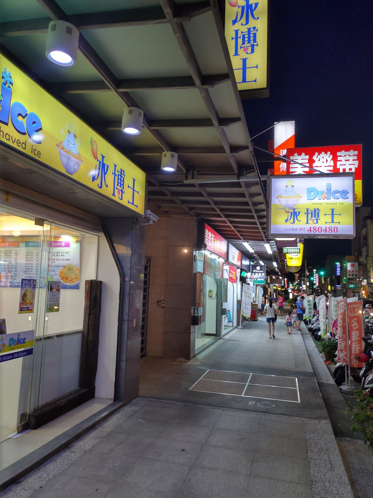
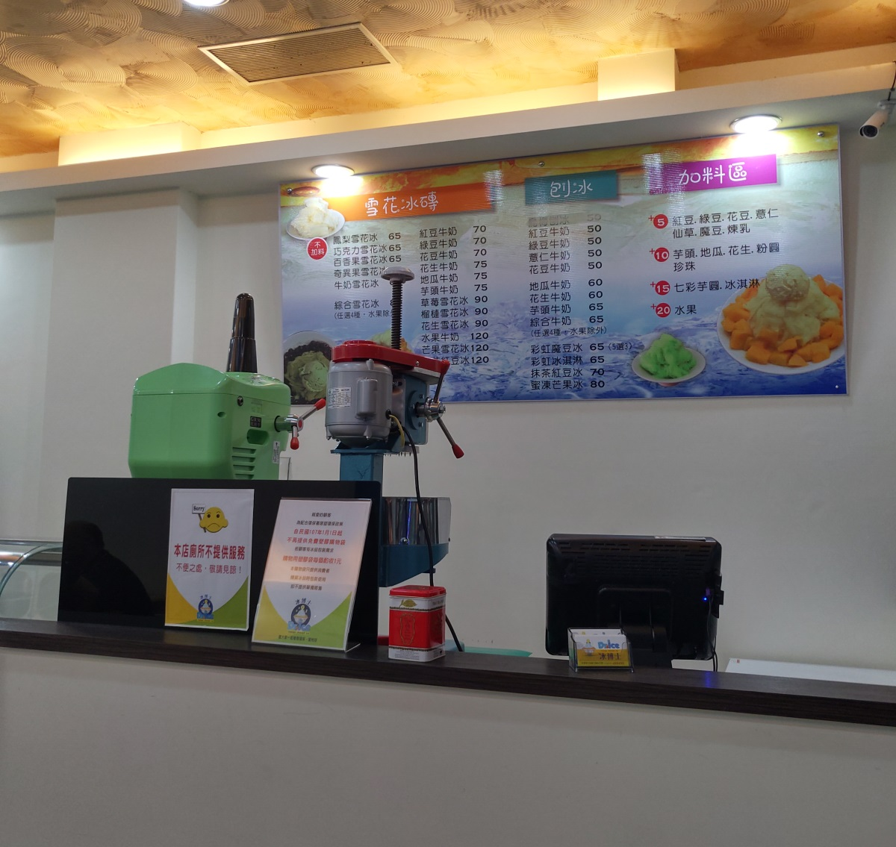
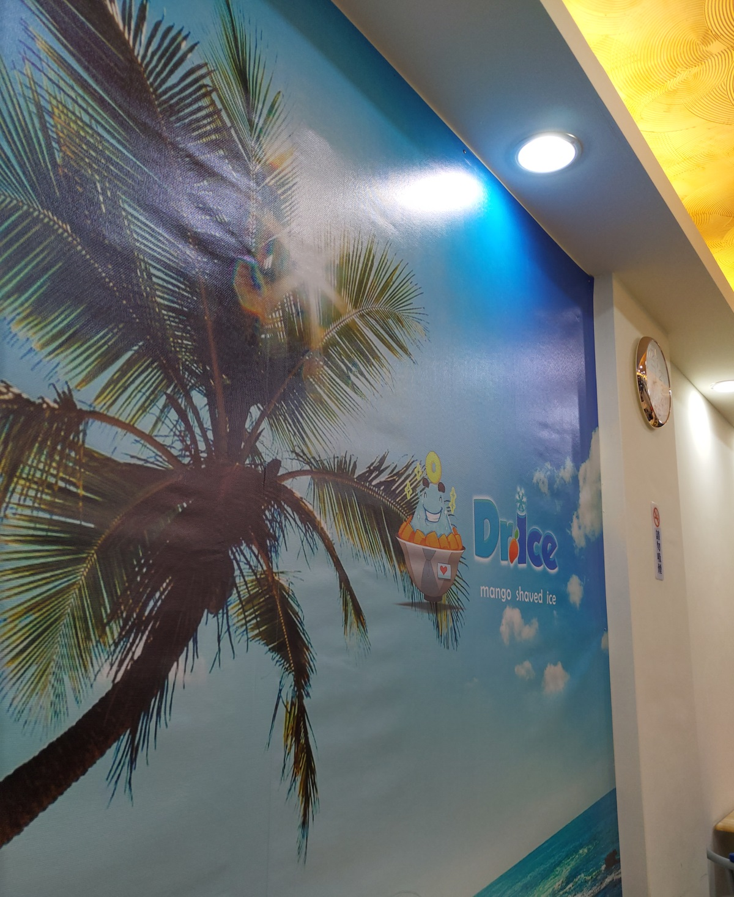
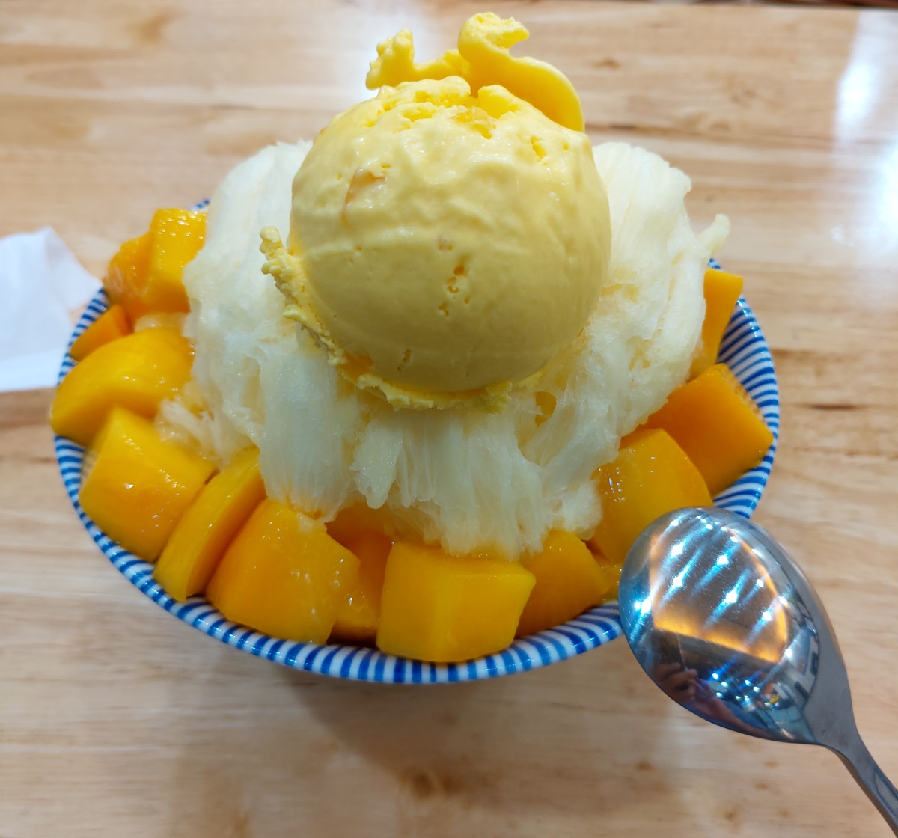

[竹南] Dr.ice冰博士
餐廳名稱: Dr.ice冰博士
地 址: 苗栗縣竹南鎮光復路219號
營業時間: 中午11:00 - 晚上9:00
在 滿意麵食坊 用完晚餐後， 天氣炎熱，對面好幾間冰店，最後覺得似乎很久沒吃 芒果雪花冰 了，就選這家。 
牆壁上大大的菜單。 
回家查網路，似乎剛開一年，還算新。 
芒果雪花冰，意外的比想像中的好吃，覺得甜度夠，芒果塊新鮮，雪花冰很綿密，那球芒果冰淇淋也不錯。 
不錯，可以把 滿意麵食坊 與 Dr.ice 組合成一套行程。